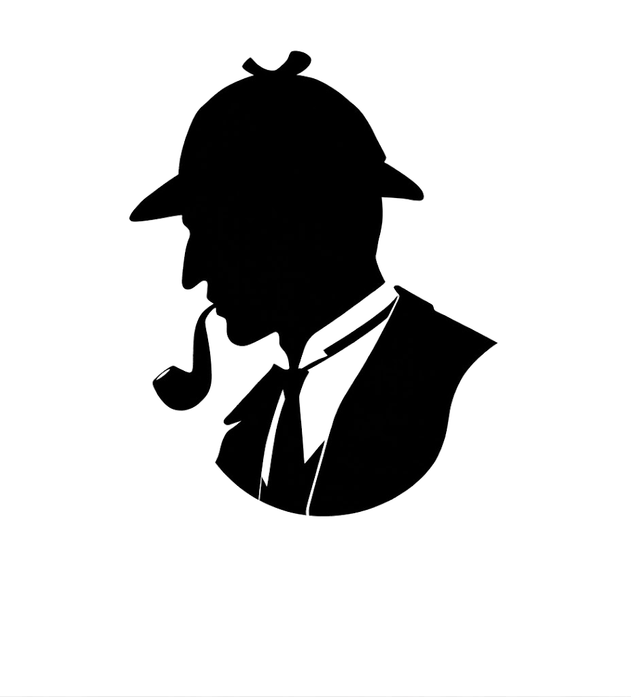

Artificial Intelligence
Classical AI thinking, rule-based systems, reasoning, intelligent assistants and learning through experimentation.
CHENNAI, INDIA · BUILDING WITH INTENT
Hello, I’m
AI • CYBERSECURITY • CREATIVE BUILDER
I like turning complicated ideas into things people can actually use — combining artificial intelligence, cybersecurity, web technology, design, communication and team leadership into work that feels deliberate.
“Build things that make people stop and look twice.”
JAIYANTH — NOTESABOUT THE PERSON
I’m someone who sits comfortably between technology and people. I enjoy AI, cybersecurity, building websites, design, public speaking and the messy process of turning an idea into something real.
My story started with schooling in North Carolina. I moved to India in 3rd standard and continued my education here, completing 10th, 11th and 12th in India. That change gave me two different environments to learn from and shaped the way I adapt to people, teams and situations.
I hold Cambridge certificates, have participated in many hackathons, and genuinely enjoy the pressure of building, presenting and iterating when the clock is running. Outside formal work, I love reading and spending time studying AI — not just using tools, but understanding how ideas become systems.
HOW I LEAD
For me, leadership means making the people around you better.
I believe a good leader puts the team before the ego. That means listening before deciding, giving teammates room to own their strengths, bringing different personalities together, creating clarity when things get chaotic, adapting when the plan changes, and standing beside the team when pressure arrives.
In hackathons and collaborative projects, I naturally move toward coordination: who is doing what, what is blocked, what needs to change, who needs support, and how we make sure everyone gets a chance to contribute. The final result should feel like the team built it, not one person carried it.
THE TOOLKIT
Classical AI thinking, rule-based systems, reasoning, intelligent assistants and learning through experimentation.
Threat thinking, cybersecurity concepts, ethical hacking, security-focused problem solving and hands-on learning.
Building responsive websites with attention to structure, interaction, visual hierarchy and user experience.
Public speaking, bringing people together, explaining ideas clearly and coordinating teams under pressure.
Visual concepts, premium presentation, content creation and thumbnail editing with a strong eye for composition.
I learn by building — testing ideas, breaking things, rebuilding them and going deeper when something catches my attention.
THE JOURNEY
Started schooling in North Carolina, then moved to India in 3rd standard and continued the next chapters here.
Completed senior schooling in India while developing an interest in technology, communication and creative work.
Built an international academic foundation alongside a growing interest in technology and communication.
Experience across Intel P, Code C Technologies, cybersecurity/web programming work and a UI/UX design internship.
Participated in many hackathons, worked with content creators on content creation and thumbnail editing, and kept building.
Exploring intelligent systems, security ideas, polished digital experiences and projects that connect technology with people.
SELECTED BUILDS

01A classical-AI cybersecurity expert system built around structured reasoning. Sherlock explores how security knowledge can be turned into explainable, rule-driven decisions — moving from a situation to a threat understanding, reasoning and an actionable response.
A multilingual, voice-friendly assistant concept designed around accessible health education, myth checking, resource/PDF support and safety-aware information. The project explores English, Tamil and Hindi interactions while keeping the experience educational rather than diagnostic.
A cybersecurity-focused project built around identifying warning signals and helping turn suspicious situations into something understandable and actionable. It reflects the way I like security work: observe, structure, reason and respond.
A premium boutique website experience focused on visual storytelling, glassmorphism, luxury styling, product presentation, responsive layouts and a polished digital identity.
This portfolio itself is a project: a cinematic identity system combining motion, typography, interaction, storytelling, personal work and a little theatricality.
THE OTHER SIDE
Technology gives me structure. Writing gives me somewhere to put the things structure cannot hold.
Between an idea and a build,
there is a quiet kind of fire —
the moment when “what if?”
becomes “let’s try.”
I do not want a finished road,
I want the courage to draw one.
To break the shape,
rebuild the edges,
and leave something behind
that did not exist before.
A room becomes a team
when every voice has space.
A leader becomes a leader
when the room can shine
without needing his name.
LET’S BUILD SOMETHING
For collaborations, opportunities, project conversations or simply a good technology discussion, LinkedIn is the best way to reach me.